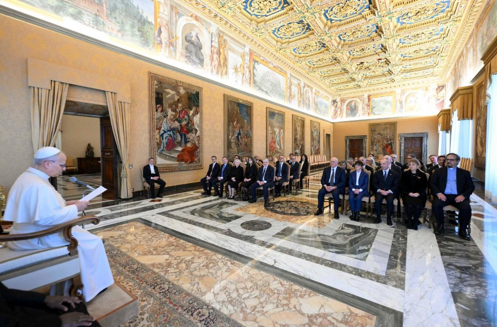
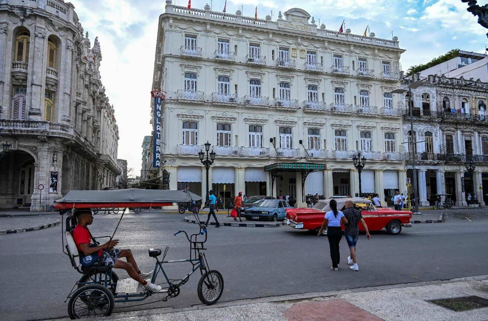
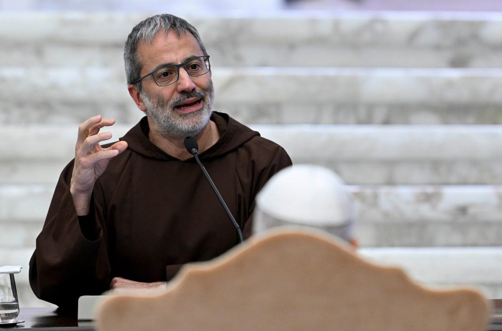
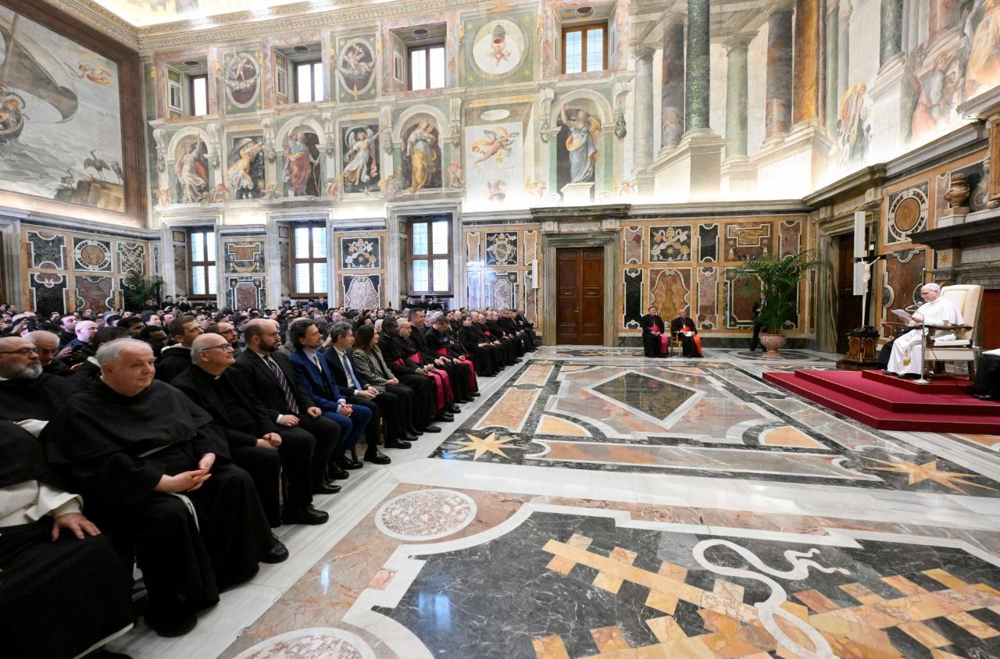

Dominio Osservatore Romano
Il dominio osservatoreromano verra dismesso: i contenuti confluiranno nel portale unificato.
Liturgia del giorno
Venerdi della IV settimana di Quaresima
Uso interno
Il dominio osservatoreromano verra dismesso: i contenuti confluiranno nel portale unificato.
Flusso invariato in diretta: pubblicazione da redazione italiana tramite AEM (Adobe Experience Manager).
Alimentazione da GN4 alla chiusura giornale, con pubblicazione a fine ciclo editoriale.
Completare la nota operativa relativa al flusso "mentre per..." con responsabilita, orario e sistema di pubblicazione.
Premi il pulsante per testare il feed live.

Venerdì 13 marzo 2026

Nell'udienza del mattino il Pontefice richiama governanti e cittadini alla responsabilità morale davanti ai conflitti che feriscono i popoli.
Copertura integrata: LIVE Vatican News, approfondimento de L'Osservatore Romano, audio di Radio Vaticana.





Radio Vaticana
Estratti audio con immagini editoriali, selezionati dall'edizione del giorno.
Streaming audio principale
Diretta disponibile
In evidenza
Radiogiornale | a cura di G. Bernabei

Radiogiornale | a cura di V. Binetti
Radiogiornale | con A. Gagliarducci
Radiogiornale | a cura di F. Sabatinelli
Radiogiornale | con C. Seppia
Come il Papa trasforma la parola ordinaria in strumento pastorale. Un'analisi dei discorsi degli ultimi dodici mesi.
Nella tradizione del pensiero cattolico la prossimità non è mai soltanto gestuale: è una categoria teologica che determina la qualità dell'annuncio. I discorsi recenti del Pontefice rivelano una coerenza stilistica precisa — il ricorso alla concretezza narrativa, alla citazione popolare, alla metafora domestica — che traduce dottrina in esperienza vissuta.
Questa scelta linguistica non è neutra: rispecchia una precisa visione del rapporto tra autorità e ascolto, tra istituzione e periferia.
La diplomazia vaticana nei principali dossier internazionali: strutture, processi, responsabilità.
Bollettino Sala Stampa · Vatican.va
Sinodalità concreta: esperienze pastorali a confronto nel contesto giubilare 2025-2026.
Ecologia integrale, sviluppo e dialogo tra popoli nel messaggio della Santa Sede.
Messaggio per la Pace 2026 · Vatican.vaVatican News
Vaticano
Discorsi, udienze, viaggi e testi principali con sintesi redazionale e rimando ai documenti ufficiali.
Mondo
Copertura essenziale dei conflitti e delle emergenze umanitarie con focus diplomatico della Santa Sede.
Chiesa
Diocesi, cammini sinodali e pastorale locale con notizie curate in formato breve e verificabile.
Cultura
Approfondimenti su etica, media e dialogo tra fede e contemporaneita con stile divulgativo sobrio.